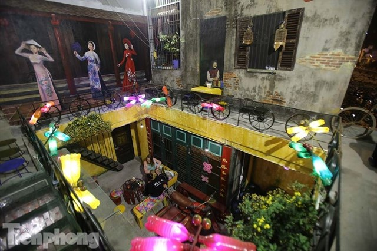
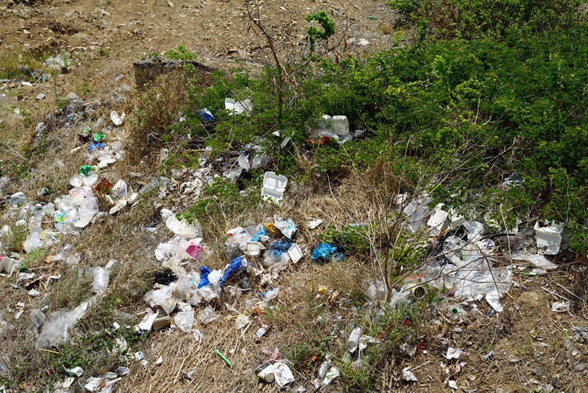

Top 6 QUÁN CAFE DÙNG ĐỒ TÁI CHẾ siêu độc đáo, cực thân thiện với môi trường
July 7, 2019

Rất nhiều thứ thú vị được dùng nào đèn trần là những chai rượu cũ..
Nhiều quán café giờ đã chuyển sang dùng ống hút tre/ống hút inox để bảo vệ môi trường. Thậm chí nhiều quán cũng tái chế đồ dùng cũ tạo thành một không gian café sáng tạo nữa, chúng mình cùng ngắm qua nhé!
Challenge For Change - Thử Thách Dọn Rác
June 2, 2019

Nhóm bạn trẻ đu dây dọn rác tại vách đá ven biển Nha Trang: "Chúng mình không làm để được khen, chỉ thấy hạnh phúc mà thôi"..
Vách đá ven biển ngày một nhếch nhác, chủ yếu là do người dân ăn uống phía trên rồi thản nhiên ném rác xuống. Với mục đích dọn sạch rác cho bãi biển quê hương và lan truyền thông điệp bảo vệ môi trường, nhóm bạn trẻ ở Nha Trang đã chung tay dọn rác, mạo hiểm đu dây xuống vách đá sâu khiến nhiều người trầm trồ.